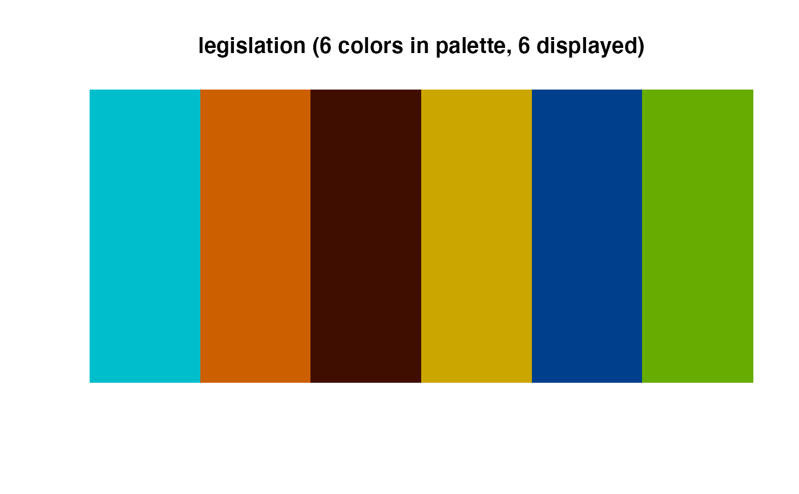

R/colors_continuous.R, R/colors_discrete.R, R/utilities.R
viz_palette.RdThe cmapplot package contains a many color palettes extracted from the larger, official CMAP color palette. Helper functions allow the user to inspect the various palettes before applying them to plots.
character, name of a a cmapplot palette, or a vector of colors representing a palette
character, title to be displayed (the name of the palette)
numeric, the number of colors to display
a vector of palette types to consider
Value to return. "colors", the default, returns the palette as a vector of colors. "type" returns the palette's type. "Exists" returns TRUE or FALSE based on whether the name is found in the palettes table.
Palettes are stored in a tibble the cmapplot_globals environment. The
user can access this tibble with get_cmapplot_global, but it is
easier to access information about a single palette with fetch_pal.
viz_palette and viz_gradient draw the palette to the plots
window. These functions are modified with respect from the
ochRe package.
For more information about available cmapplot color palettes and how to apply
them, see vignette("colors").
viz_gradient(): Interpolates the range of colors a sequential or
divergent palette offers when used on a continuous scale.
viz_palette(): Displays the colors of any cmapplot palette
fetch_pal(): Returns details about a palette
# Vizualize a sequential or divergent palette with interpolation
viz_gradient("green_teal_blue")
# Visualize a single palette as individual colors
viz_palette("legislation")

# Print names and types of all available palettes
as.data.frame(get_cmapplot_global("palettes")[1:2])
#> name type
#> 1 main discrete
#> 2 prosperity discrete
#> 3 community discrete
#> 4 environment discrete
#> 5 governance discrete
#> 6 mobility discrete
#> 7 legislation discrete
#> 8 friday discrete
#> 9 race discrete
#> 10 reds sequential
#> 11 oranges sequential
#> 12 yellows sequential
#> 13 greens sequential
#> 14 teals sequential
#> 15 blues sequential
#> 16 purples sequential
#> 17 grays sequential
#> 18 yellow_orange_red sequential
#> 19 green_teal_blue sequential
#> 20 orange_red sequential
#> 21 yellow_orange sequential
#> 22 yellow_green sequential
#> 23 green_teal sequential
#> 24 teal_blue sequential
#> 25 red_purple sequential
#> 26 yellow_purple divergent
#> 27 orange_blue divergent
#> 28 red_teal divergent
#> 29 purple_green divergent
#> 30 blue_yellow divergent
#> 31 teal_orange divergent
#> 32 green_red divergent
# Identify the first two colors of the Prosperity Palette
fetch_pal("prosperity")[1:2]
#> [1] "#662f00" "#e5d072"
# Confirm that "reds" is a sequential palette
fetch_pal("reds", which = "sequential", return = "exists")
#> [1] TRUE